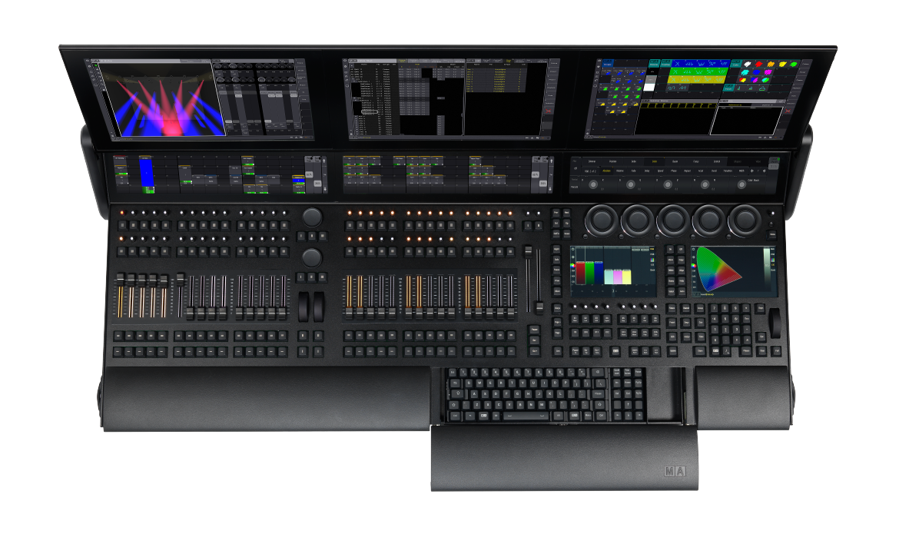
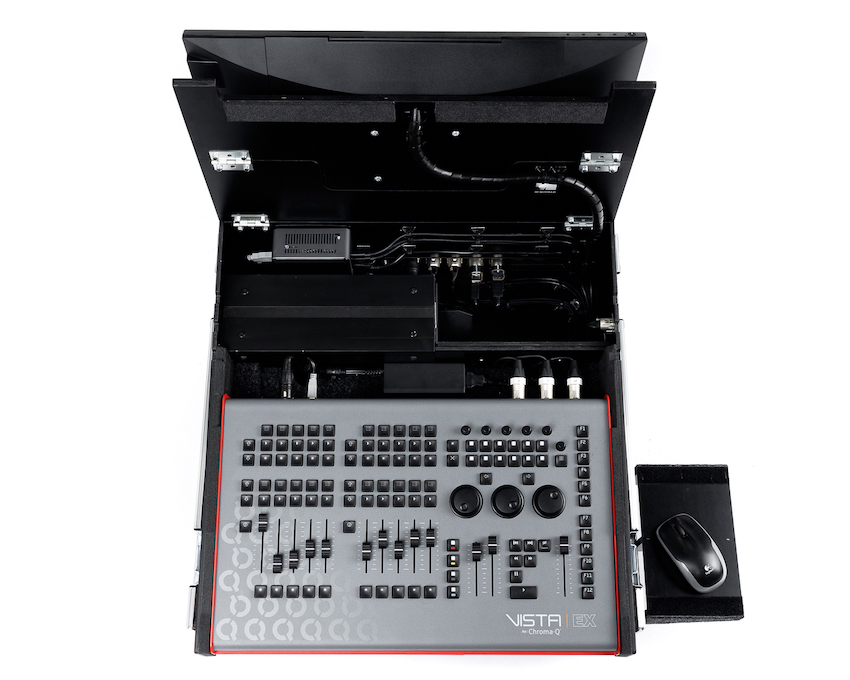
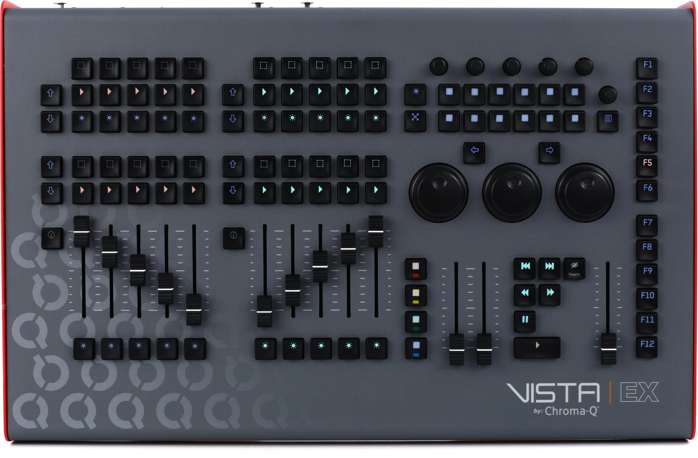

Compare the leading lighting consoles in real-world workflows.
grandMA3
VS
Vista

The grandMA3 workflow is far more organized and streamlined, offering extensive customization with groups and multiple pages.

Unlike grandMA3, which offers a highly organized and streamlined workflow with extensive customization through groups and multiple pages, Vista’s workflow is less structured and not as flexible.

The stage display in grandMA3 features customizable haze and multiple camera angles, allowing the programmer to visualize different haze levels under specific lighting and gobo setups from various perspectives."

Vista doesn’t handle nearly as well.
grandMA3
VS
Vista

The patch list in grandMA3 is far cleaner and more modern, making it easier to navigate and manage fixtures.

Vista’s patching page isn’t modern or visually clean, and it doesn’t provide step-by-step guidance or helpful hints for paging fixtures, unlike grandMA3.

The grandMA3 layout viewer lets you organize fixtures into customizable groups, with options for labeling, color coding, and size adjustments.

With Vista, accessing fixture groupings requires navigating to a separate page, unlike grandMA3. This is time-consuming, and the groups cannot be color-coded or resized.
grandMA3
VS
Vista

Depending on the grandMA3 model, you can get prebuilt touch screen monitors.

With Vista you have to buy them separately

The grandMA3 lineup is more powerful, precise, durable, versatile, intuitive, and refined, offering a smoother and more professional experience overall.

The Vista console feels cheap, plasticky, and flimsy, with loose, hollow-feeling buttons and a rough, sticky surface—utterly uninspiring to touch.